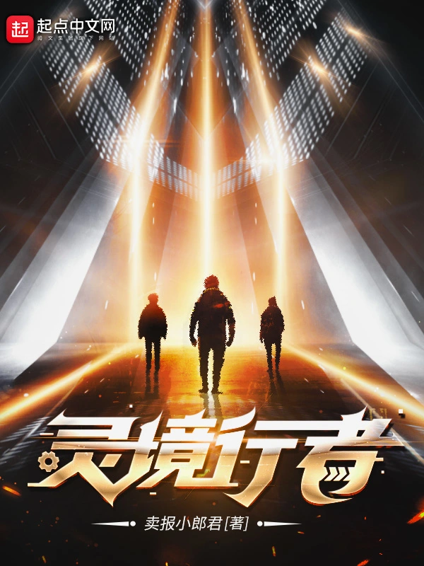

| Nom |
Description |
Image |
| 御兽之王 |
在这个崭新的御兽时代，谁能成为当之无愧的御兽之王？ |
|
| 谁让他修仙的！ |
“我反复强调，修仙界的风气本来就是歪的，不是我带歪的，都说史书是胜利者书写的，那为什么我获胜了还总是有人诬陷我？”陆阳剑仙面对记者采访如此说道，表示非常愤怒。
第二天。
“我反复强调，修仙界的风气是我带歪的。”陆阳剑仙面对记者的采访时如此说道，表示非常愤怒。——《修仙日报》为您报道。 |
|
| 这游戏也太真实了 |
这游戏也太真实了叭！
搬砖、跑腿、捡垃圾、送快递……公司最多能让你体会到996的艰辛，在这里你能体会到超级加倍的007。
好了，不废话了，伟大的管理者大人喊我去搬砖了。
那位大人说了，只要我们努力献上自己的肝，下个月他又能换一套全新的动力甲，到时候带我们开全新的地图，去广阔的废土捡更多的垃圾！
……
穿越到废土世界的楚光发现，自己解锁了避难所系统，能够从平行世界召唤名为“玩家”的生物。
从那天开始，整个废土都不正经了。 |
|
| 唐人的餐桌 |
虽然原始的食材便具有食物原始的风情，云初还是认为，最美味的食物还是需要经过分割，烹调，处置，最后端上桌的食物才是最符合大唐人肠胃的食物。
清蒸，红烧，爆炒，炖煮……天下有多少事，庖厨便有多少种烹调手段。 |
|
| 乱世书 |
仗剑江湖载酒行，楚腰纤细掌中轻。
少年肩扛长刀，腰间挂酒，大步前行，心中的江湖却隐约难见。
乱世书中翻一页，江湖夜雨数十年。
蓦然回首，已劈碎了人间。 |
|
| 灵境行者 |
亘古通今，传闻世有灵境。
关于灵境的说法，历朝历代的名人雅士众说纷纭，诗中记载：
“自齐至唐，兹山濅荒，灵境寂寥，罕有人游。”
“灵境不可状，鬼工谅难求。” |
 |
| 苟在妖武乱世修仙 |
方夕穿了，而且是二穿！
在修仙界我唯唯诺诺，在异世界我重拳出击！
没想到千百年后，在修仙界也成了大佬！ |
|
| 赤心巡天 |
上古时代，妖族绝迹。近古时代，龙族消失。神道大昌的时代已经如烟，飞剑绝巅的时代终究沉沦……
这个世界发生了什么？
那埋葬于时间长河里的历史真相，谁来聆听？
山河千里写伏尸，乾坤百年描饿虎。
天地至公如无情，
我有赤心一颗、以巡天！ |
|
| 凡人修仙传 |
一个普通山村小子，偶然下进入到当地江湖小门派，成了一名记名弟子。他以这样身份，如何在门派中立足,如何以平庸的资质进入到修仙者的行列，从而笑傲三界之中！ |
|
| 斗破苍穹 |
这里是属于斗气的世界，没有花俏艳丽的魔法，有的，仅仅是繁衍到巅峰的斗气！
新书等级制度：斗者，斗师，大斗师，斗灵，斗王，斗皇，斗宗，斗尊，斗圣，斗帝。 |
 |
| 遮天 |
冰冷与黑暗并存的宇宙深处，九具庞大的龙尸拉着一口青铜古棺，亘古长存。
这是太空探测器在枯寂的宇宙中捕捉到的一幅极其震撼的画面。
九龙拉棺，究竟是回到了上古，还是来到了星空的彼岸？
一个浩大的仙侠世界，光怪陆离，神秘无尽。
热血似火山沸腾，激情若瀚海汹涌，欲望如深渊无止境……
登天路，踏歌行，弹指遮天。 |
|
| 万族之劫 |
我是这诸天万族的劫！？ |
 |